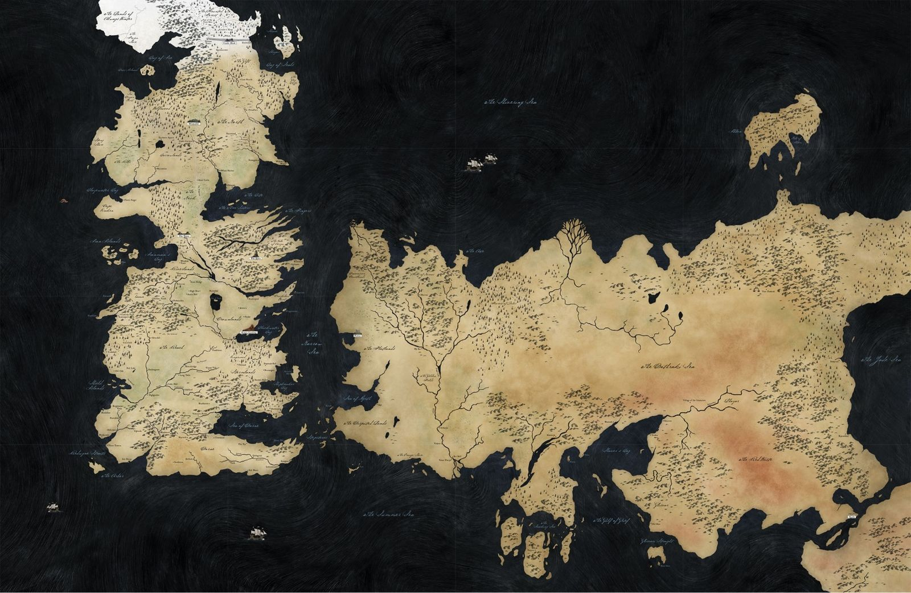

Histoire de Game Of thrones
Avant tout, laissez-moi vous rappeler brièvement ce qu’il s’est passé juste avant le tout premier épisode de la série … Avant le tournoi d’Harrenal, le prince Rhaegar de la maison Targaryenne, fils de Aerys II, kidnappe Lyanna Stark qui était promise à Robert Baratheon. Le père et le frère ainé de Lyanna se présentent au roi Aerys pour qu’il leur rende Lyanna mais ils se font bruler vifs par le roi lui-même. Le roi Aerys demande alors à Lord Jon Aryn les têtes de Robert Baratheon et de Eddard Stark (le deuxième frère de Lyanna). Celui-ci refuse et réunit ses bannières : Stark, Baratheon et Tully. Robert, qui rejoint les forces d’Aryn, se retrouve encerclé par l’armée royale et est forcé à se réfugier dans la ville. C’est Ned Stark qui vient le secourir avec son armée du Nord. A eux deux, ils gagnent la bataille contre l’armée royale. Les 4 maisons, enfin réunies, rencontrent (au Trident) l’armée du prince Rhaegar et Robert tue le prince dans un combat singulier. Entre temps, Tywin Lannister arrive à Port-Réal pour présenter son aide au roi Aerys II pour combattre Robert. Une fois à l’abri au sein de la ville, l’armée Lannister saccage tout sur son passage. Jamie Lannister, garde royale de Aerys, assassine son roi. Son l’ordre de Tywin, Gregor Clegane tue les enfants du prince Aegon ainsi que la princesse Elia Martell. Stannis est envoyé par son frère Robert pour tuer les frères et sœurs du prince Rhaegar. Un chevalier du roi Aerys et quelques contrebandiers réussissent à sauver les deux enfants (Viserys et Daenerys) et les envoient à Bravoos. Ned parvint à trouver sa sœur sur la montagne rouge de Dorne, après avoir combattu avec une poignée d’hommes, il réussit à parler à sa sœur avant qu’elle ne meure. Il lui promet d’honorer son dernier souhait. Finalement, Robert devient roi et fait d’Aryn sa main. Lyanna étant morte, il prend la fille de Tywin pour épouse. Eddard Stark retourne à Winterfell et se marie avec la promise de son frère (Catelyn Tully). Les Dorniens signent la paix.

Le nord
La région nord de Westeros est le domaine de la maison Stark depuis le Neck jusqu'au Mur. C'est la région la plus froide de Westeros. Au-delà du Mur se trouvent de vastes étendues glacées où vivent les Peuple libres, appelés «Sauvageons» par les habitants du nord car ils font de régulières expéditions de pillage sur leurs terres, malgré la protection du Mur et de la Garde de Nuit. Les bâtards y sont nommés Snow.
Le conflans
Le Conflans, domaine de la Maison Tully, est une région de Westeros bordée par le Neck au nord, par le Val d'Arryn et les Terres de la Couronne à l'est, et par le Bief et les Terres de l'Ouest au sud et à l'ouest. C'est une région fertile traversée par de nombreux cours d'eau. Les bâtards y sont nommés Rivers.
Le Val d'Arryn
Le Val d'Arryn, domaine de la Maison Arryn, est une région montagneuse bordée par le Conflans à l'ouest et les Terres de la Couronne au sud. La présence dans cette région de clans montagnards ne se soumettant pas à l'autorité royale rend les voyages dangereux. Les bâtards y sont nommés Stone.